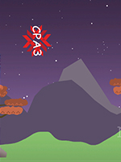
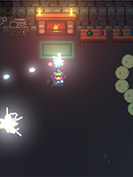
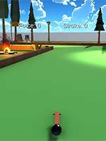
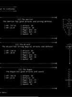

'Fall For Halloween' - A game I created for my first Game Jam hosted by the Fanshawe Game Development Club. You can play it in the web browser right here on itch.io.
'Don't Fail CPA3!' - My first game created in the Unity Engine. Try out the original version here, or the easier version here!
'Witch's Cave' - My second game created in the Unity Engine. You can try it out right here
'Baxstar's Mini Golf' - My third game created in the Unity Engine. It's a simple 3-D Golf game demo with 3 courses. Make the game fullscreen when you try it out!
'Baxstar's Not-So-Basic RPG' - You can see a playthrough of my game right here on YouTube! If you want to play the full demo, click and download right here! Simply extract the .zip folder, and double click 'run.bat'. You must have Java JDK 15+ installed on your PC in order to play.
Here is a short list of some projects I've completed to display my programming and game design skills.
'Fall For Halloween' - This is my first Game Jam project that I created in 3 days with the theme "Fall" in mind. Fall for Halloween is a twin-stick shooter inspired by one of my earlier creations called "Witch's Cave". Created using the Unity Engine, written in C#. Can you beat my personal best of 573 points? Try it out right here!
'Don't Fail CPA3!' - Is my first attempt at making a game with the Unity Engine, written in C#. It's a Flappy Bird-like game. All art assets and effects created by myself, music and sound effects taken from various sources on the internet. Click the left mouse button to flap your way to 100%! Try it out here. Too hard? Try an easier version here!
'Witch's Cave' - Witch's Cave is a twin-stick-shooter game and my second attempt at creating something in Unity. You can play using the W,A,S,D keys and the mouse, or plug in almost any game controller! The art assests, effects, and animations were created by myself using Aesprite, with the exception of (almost all) of the background elements. Music and sound effects taken from various sources on the internet. Click this link to play
'Baxstar's Mini Golf' - This game was my third attempt at creating something in Unity. You can play using the W,A,S,D keys and the spacebar. This game is a short 3-D mini golf game with 3 courses, and is my first project with 3-D in Unity. You can play it here. Make sure you click the 'Fullscreen' button in the bottom right hand corner for a better experience!
'Baxstar's Not-So-Basic RPG' - This is a text-based RPG in a Medieval Fantasy setting. Play as the Warrior, Wizard, or Rogue. This is a project that I started after my 5th week in my first semester at the CPA3 Program at Fanshawe. After getting a small taste for the basics in programming, I went off on my own spending close to a 100 hours doing my own research and watching tutorials on how to implement Object Oriented Programming principles in Java during my week off. I then started this project as a way to practice and implement my new knowledge, and the demo ended up becoming a game that will take easily over an hour to complete after an additional 250 or so hours of work! Check out my YouTube playthrough of it here!
If you want to play the full demo, click and download right here! Simply extract the .zip folder, and double click 'run.bat'. You must have Java JDK 15+ installed on your PC in order to play.
This Website - Created using Microsoft Visual Studio Code, and Photoshop.
{kind=link}
{kind=link}
{kind=link}
{kind=link}
{kind=link}